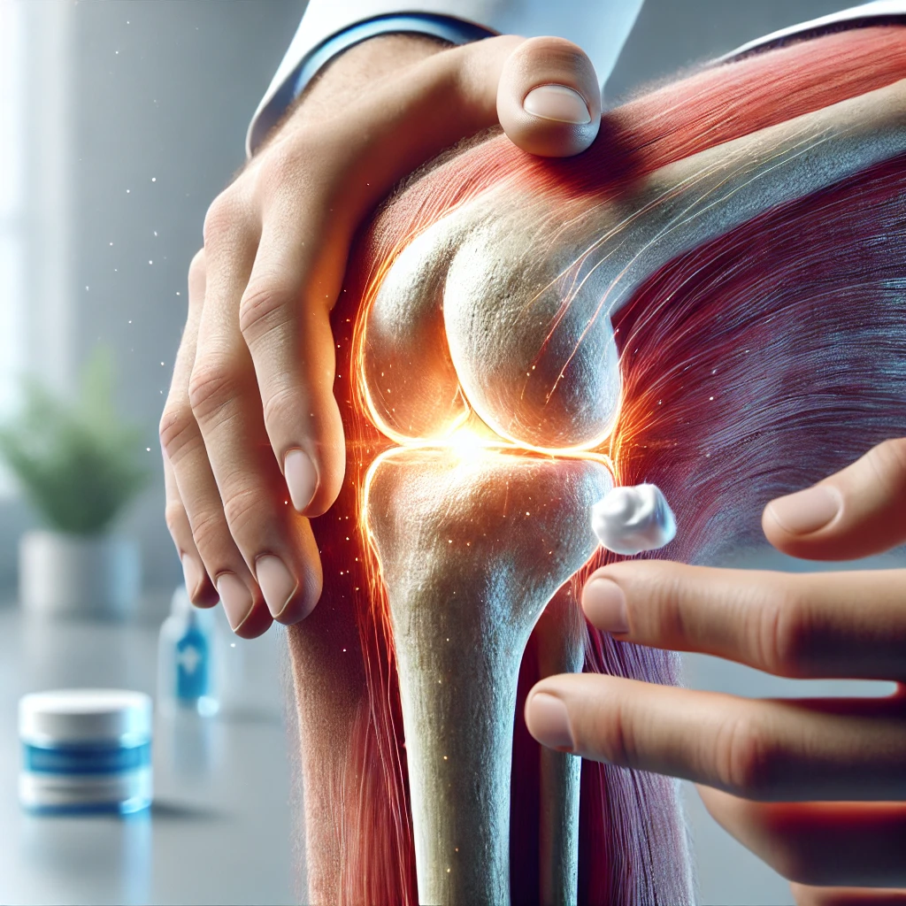
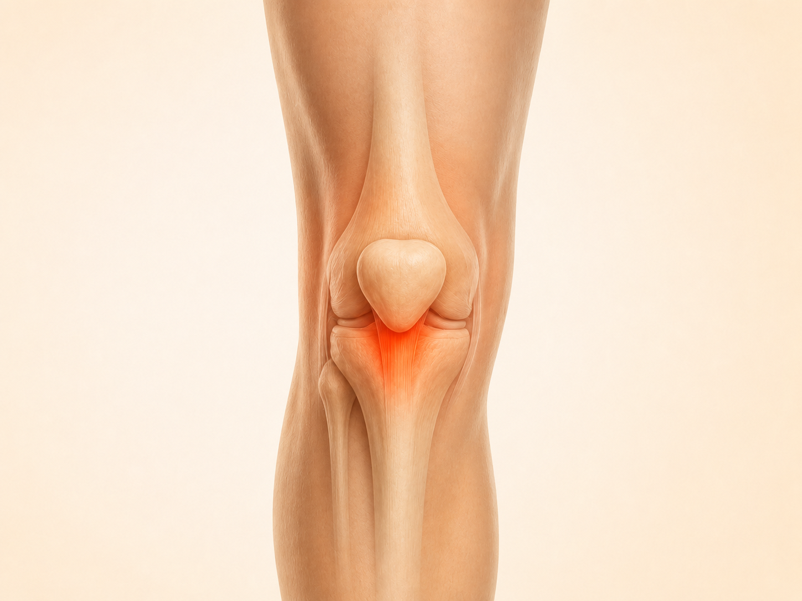
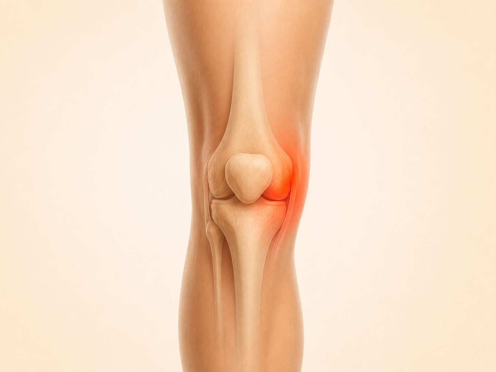
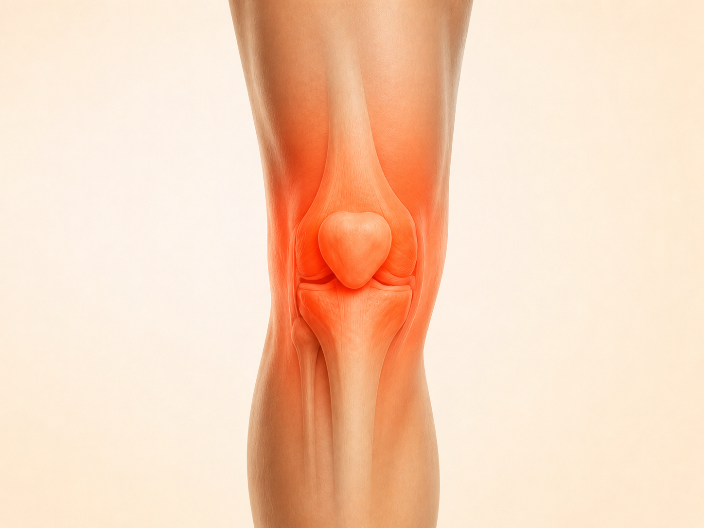

Спуск сходами став неприємним
Ходити ще можна, але під час спуску коліно відчувається особливо сильно, з’являється невпевненість або бажання переносити вагу на іншу ногу.
Авторська програма від фізичного терапевта з понад 10-річним досвідом
Безпечна система вправ та самомасажу: зменшує біль й допомагає повернутись до активності — від 15 хвилин на день.
Лише за 390 грн, замість 1899 грн
До оновлення спеціальної пропозиції:
1200+ учасників уже покращили свій стан
Впізнаєте свою ситуацію?
Ходити ще можна, але під час спуску коліно відчувається особливо сильно, з’являється невпевненість або бажання переносити вагу на іншу ногу.

На початку прогулянки все нормально, але згодом виникає скутість, важкість або відчуття, що коліну потрібен відпочинок.

Незрозуміло, які вправи вже можна виконувати, як збільшувати навантаження і з чого почати поступове повернення до звичних справ.

Через скутість і неприємні відчуття активності стає менше, хоча правильно підібране поступове навантаження може бути частиною роботи над функцією коліна.

Особливо знайома ситуація
Поки навантаження було меншим, ставало легше. Але після повернення до роботи, прогулянок або тренувань дискомфорт з’являвся знову — і доводилося починати пошук рішення спочатку.
Чому так відбувається
Пасивні методи, відпочинок або призначене лікування можуть бути корисною частиною допомоги. Але після паузи коліно не завжди одразу готове до тієї кількості ходьби, сходів і навантажень, які були раніше.
Неприємні відчуття зменшилися, тому хочеться швидко повернутися до звичного ритму.
Робота, довгі прогулянки, сходи або тренування знову стали частиною дня.
Сили, контролю та витривалості поки недостатньо для попереднього обсягу активності.
З’являється відчуття, що нічого не працює, хоча часто бракує саме послідовного повернення навантаження.
Вона допомагає поступово підготувати коліно до тих рухів і навантажень, з якими ви стикаєтеся щодня.
Зрозумілий шлях замість хаотичних вправ
У програмі вже побудована послідовність. Ви починаєте з доступного рівня і переходите до складніших вправ тоді, коли базові рухи виконуються впевненіше.
Базовий рівень
М’який старт, робота з доступною амплітудою і вправи для основних м’язових груп.
Орієнтири прогресу
Усередині програми є критерії, які допомагають оцінити готовність до наступного рівня.
Функціональний рівень
Поступове ускладнення вправ для ходьби, сходів, побутових і активніших рухів.
Усе необхідне вже зібрано в одному місці
Одразу після оплати відкривається Telegram-бот із готовою послідовністю занять. Не потрібно самостійно шукати вправи, складати план або вирішувати, коли збільшувати навантаження.

Практична частина
У кожному відео показана техніка, кількість повторень і підходів. Є простіші та складніші варіанти для адаптації навантаження.

Послідовність
Перший етап працює з рухливістю, активацією м’язів і контролем. Другий — із силою, стабільністю, витривалістю та поверненням активності.

Контроль прогресу
Між етапами є короткі тести й зрозумілі орієнтири, які допомагають вирішити: переходити далі чи ще попрацювати на поточному рівні.

Додатковий бонус
Окремі пояснення про найпоширеніші проблеми та травми коліна, локалізацію дискомфорту й особливості підбору навантаження.

Регулярність
Нагадування в календарі, щоб було простіше зберігати послідовність і не випадати з процесу.

Зручний формат
Матеріали можна зберегти на телефон, відкрити без постійного пошуку в боті або роздрукувати для виконання вправ.
Що виконувати, у якій послідовності та за якими орієнтирами рухатися далі.
Додатково до основної програми
Дискомфорт у різних зонах коліна може мати різні особливості. У бонусних відео я пояснюю, на що варто звернути увагу та як адаптувати вправи під свою ситуацію.

Чому неприємні відчуття можуть з’являтися під час присідання, спуску сходами або тривалого сидіння та на які м’язи й рухи варто звернути увагу.
Пателофеморальний дискомфорт

Що може впливати на появу неприємних відчуттів під час стрибків, бігу, присідання або різкого збільшення навантаження.
Зона сухожилля надколінка — «коліно стрибуна»

Чому зовнішня зона може нагадувати про себе під час бігу, тривалої ходьби або повторюваних згинань коліна.
Так зване «коліно бігуна»

Як поводитися після можливої травми меніска, які симптоми потребують додаткової перевірки та як поступово повертати навантаження.
Травми та зміни меніска

Як вправи й поступове дозування навантаження можуть допомагати підтримувати рухливість, силу та повсякденну активність.
Вікові зміни й артроз коліна

З чого починати після травм зв’язок, тривалої перерви або періоду обмеженого навантаження та як поступово повертати контроль рухів.
Відновлення після травми коліна
Не знаєте, як краще стартувати саме у вашій ситуації?
Окрім повного доступу до програми, ви отримаєте можливість поставити свої запитання, показати обстеження та отримати рекомендації щодо того, як краще почати саме у вашому випадку.
Ви надсилаєте інформацію, документи та відео у зручний час. Богдан особисто переглядає матеріали, відповідає й пояснює рекомендації зрозумілою мовою.
Що ви отримуєте
Після індивідуальних рекомендацій
Нижче — реальні повідомлення після персонального розбору.


Досвід учасників


Оберіть формат
В обох форматах ви отримуєте повний доступ до вправ, етапів, тестів, PDF-матеріалів і бонусних відео. Відмінність лише в тому, чи потрібні вам додаткові індивідуальні рекомендації автора.
До оновлення спеціальної пропозиції:
Повна програма
Повний доступ до всіх матеріалів і готової послідовності занять.
14 днів гарантії повернення коштів
Повна програма + рекомендації автора
Та сама повна програма, а додатково — персональний аналіз вашої ситуації та рекомендації щодо старту.
Без дзвінків — відповідаєте на анкету у зручний час
Поширені запитання
Можна спробувати без зайвого ризику
Якщо після знайомства з матеріалами ви зрозумієте, що формат вам не підходить, напишіть протягом 14 днів — оплату буде повернено.